長期トレンド
JKMとJEPXシステムプライスの推移グラフ
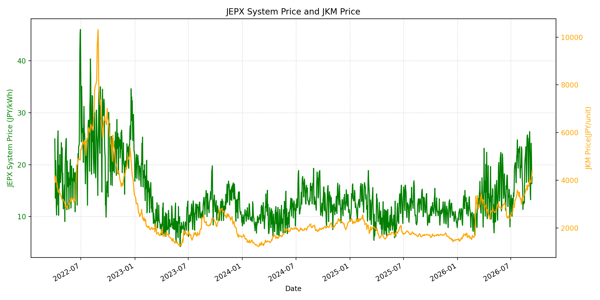
WTIの推移グラフ
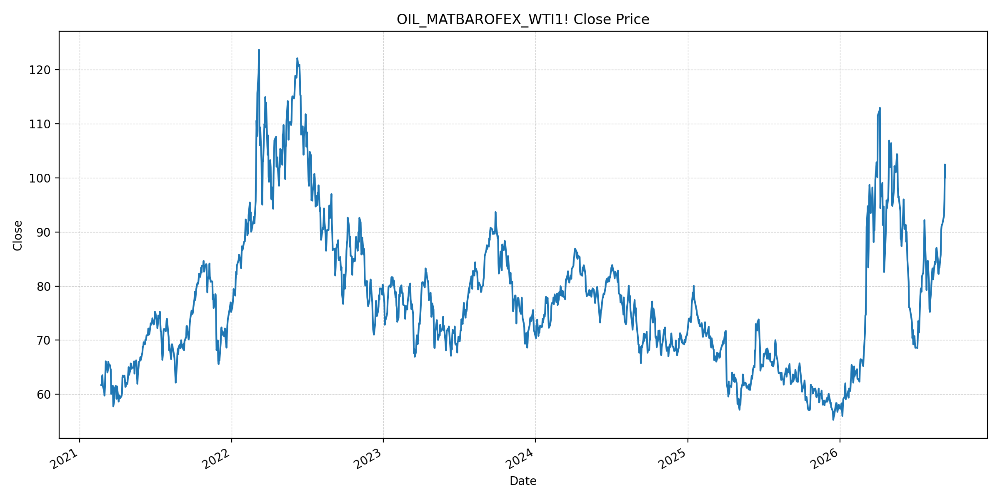
JEPXエリアプライスグラフ（直近一年分）
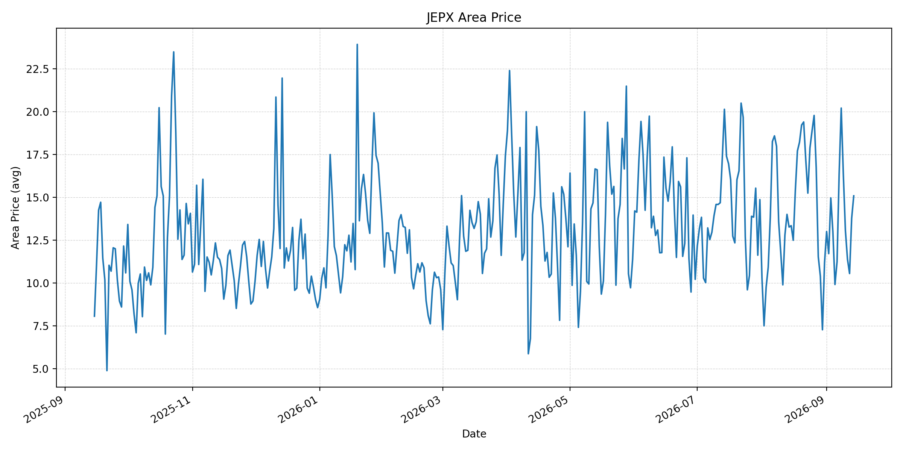
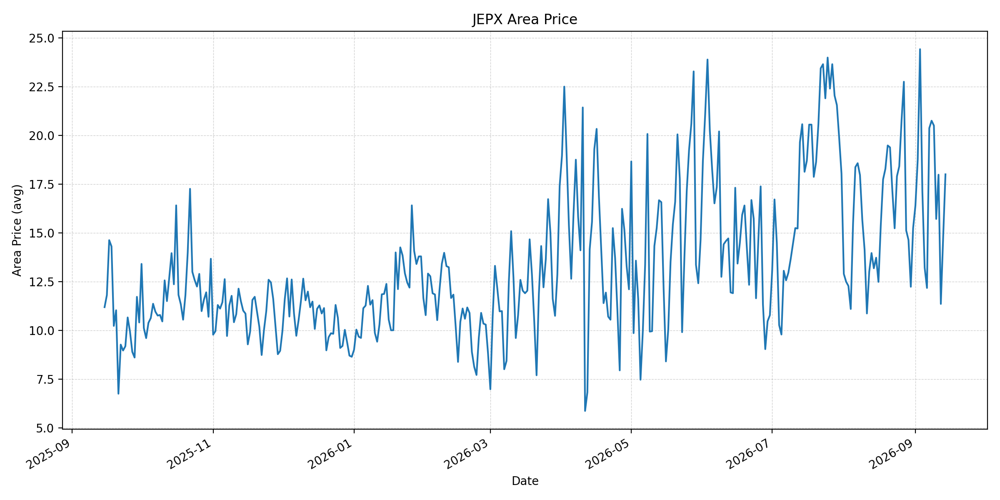
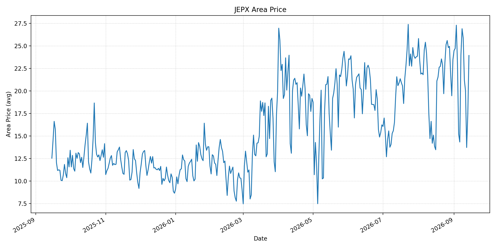
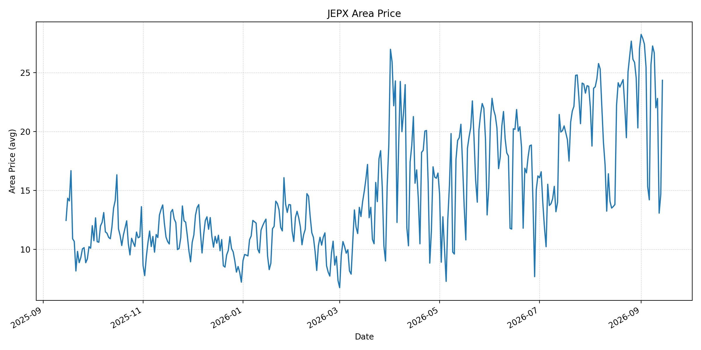
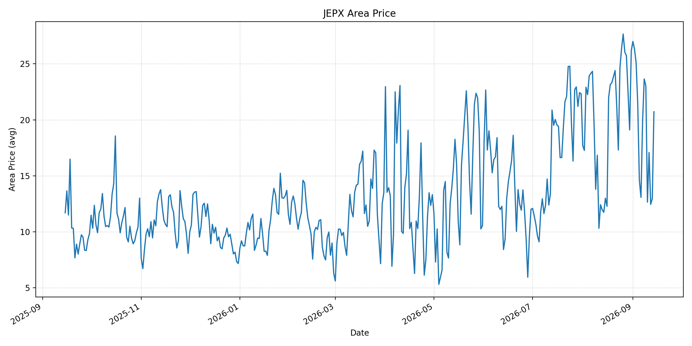
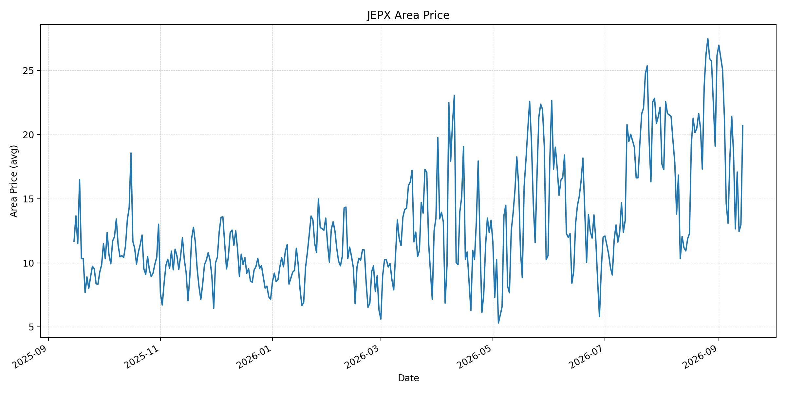
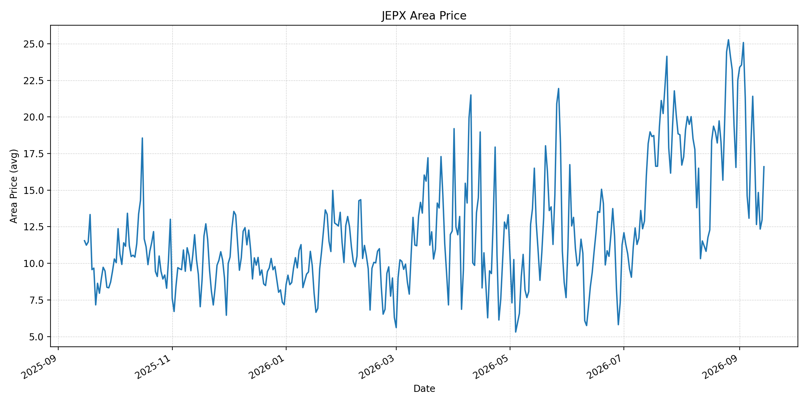
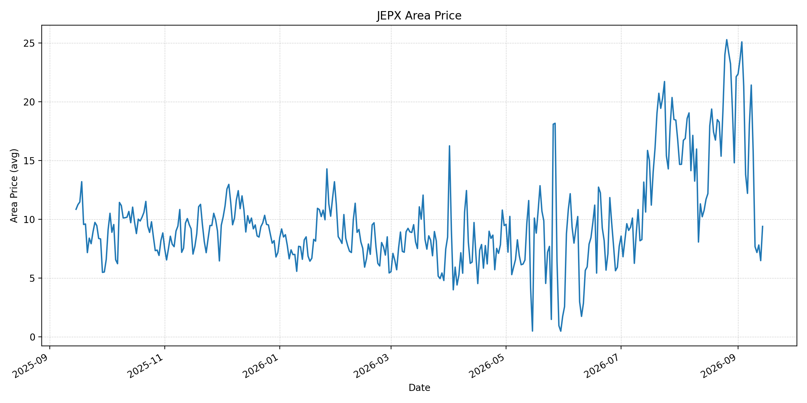
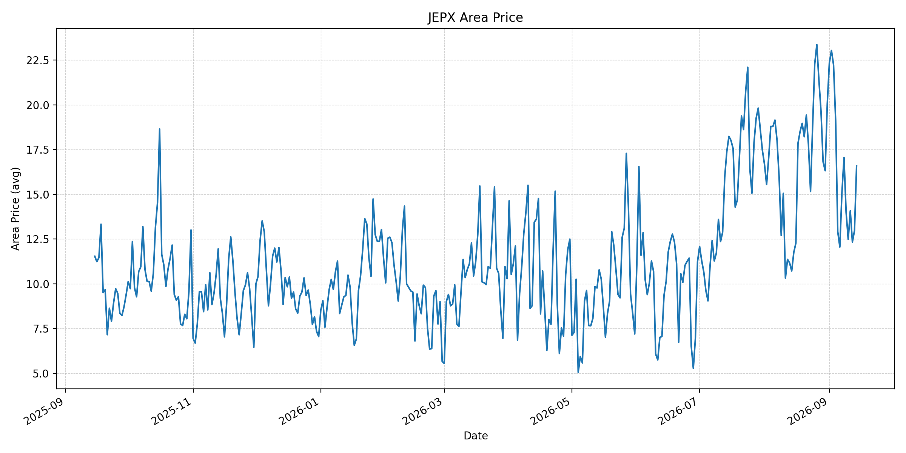
短期トレンド
JKMとJEPXシステムプライスの推移グラフ
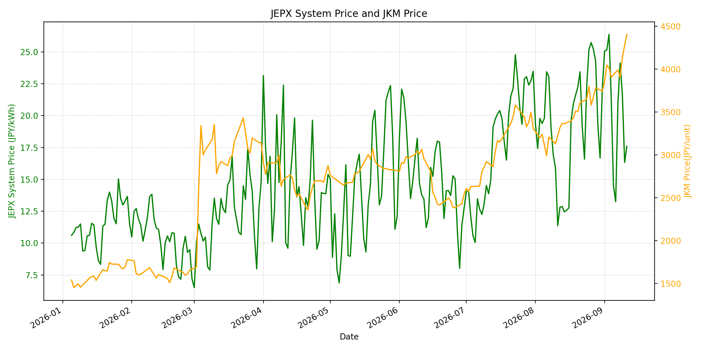
WTIの推移グラフ
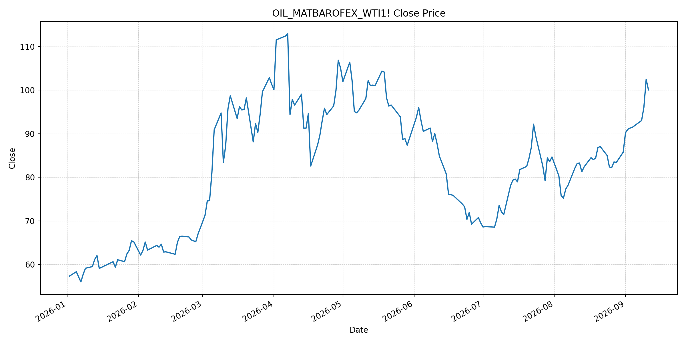
JEPXシステムプライス
最新値は 2026-09-14 分、先週終値は 2026-09-07、先月終値は 2026-08-31 時点の直近値です。
| エリア | 当日価格 | 前日価格 | 前日比（％） | 先週終値 | 先週比（％） | 先月終値 | 先月比（％） | 過去最高値 | 最高値比（％） |
|---|---|---|---|---|---|---|---|---|---|
| システム | 20.17 | 14.29 | 41.15 | 21.04 | -4.13 | 22.10 | -8.73 | 64.06 | -68.52 |
| 北海道 | 15.08 | 13.77 | 9.51 | 16.36 | -7.82 | 11.18 | 34.88 | 73.92 | -79.60 |
| 東北 | 18.01 | 14.76 | 22.02 | 20.38 | -11.63 | 15.25 | 18.10 | 84.92 | -78.79 |
| 東京 | 23.93 | 17.42 | 37.37 | 23.99 | -0.25 | 23.47 | 1.96 | 86.13 | -72.22 |
| 中部 | 24.34 | 14.67 | 65.92 | 25.65 | -5.11 | 27.01 | -9.89 | 52.06 | -53.25 |
| 北陸 | 20.72 | 12.97 | 59.75 | 19.88 | 4.23 | 26.18 | -20.86 | 46.48 | -55.43 |
| 関西 | 20.71 | 12.97 | 59.68 | 18.19 | 13.85 | 26.17 | -20.86 | 46.48 | -55.45 |
| 中国 | 16.60 | 12.97 | 27.99 | 18.04 | -7.98 | 22.51 | -26.25 | 46.48 | -64.29 |
| 四国 | 9.39 | 6.48 | 44.91 | 18.04 | -47.95 | 22.12 | -57.55 | 46.48 | -79.80 |
| 九州 | 16.60 | 12.97 | 27.99 | 15.10 | 9.93 | 20.06 | -17.25 | 40.54 | -59.06 |
LNG先物価格
最新値は 2026-09-11 の LNG(close) です。先週終値は 2026-09-04、先月終値は 2026-08-31 時点の直近値です。
| 当日価格 | 前日価格 | 前日比（％） | 先週終値 | 先週比（％） | 先月終値 | 先月比（％） | 過去最高値 | 最高値比（％） |
|---|---|---|---|---|---|---|---|---|
| 4405.00 | 4276.00 | 3.02 | 3906.00 | 12.78 | 3744.00 | 17.65 | 10319.00 | -57.31 |
石油先物価格
最新値は 2026-09-11 の OIL(close) です。先週終値は 2026-09-04、先月終値は 2026-08-31 時点の直近値です。
| 当日価格 | 前日価格 | 前日比（％） | 先週終値 | 先週比（％） | 先月終値 | 先月比（％） | 過去最高値 | 最高値比（％） |
|---|---|---|---|---|---|---|---|---|
| 100.05 | 102.48 | -2.37 | 91.48 | 9.37 | 85.76 | 16.66 | 123.70 | -19.12 |
ニュース
イラン情勢に関するニュース
- 9月13日、イラン当局はホルムズ海峡で商船が攻撃を受け、1人が死亡、4人が負傷したと発表しました。近隣国との協議も延期され、緊張緩和の見通しは不透明です。参照: AP, 2026-09-13
- 海上追跡会社は同日、ホルムズ海峡で別の船舶攻撃報告を受けました。戦争で海峡の通航が大きく制約されるなか、船舶安全の不確実性が継続しています。参照: Reuters, 2026-09-13
ホルムズ海峡経由の石油・LNGに関するニュース
- サウジアラビアが東西パイプラインを停止した後に海峡での攻撃報告が重なり、中東産原油の代替搬出能力も制約される懸念が高まっています。参照: Reuters, 2026-09-13
- 過去24時間で、ホルムズ海峡経由のLNG出荷を平常化する主要な新規合意・再開公表は確認できませんでした。
ホルムズ海峡経由でない石油・LNGに関するニュース
- フーシ派は紅海南口のバブ・エル・マンデブ海峡にある島を掌握し、ホルムズ海峡の代替となる重要航路への影響力を強めました。参照: AP, 2026-09-13
- イエメンでの戦闘激化とフーシ派のサウジアラビア攻撃により、紅海沿岸の航路リスクも継続しています。参照: AP, 2026-09-13
日本国内のイラン戦争に関係するニュース
- 過去24時間で、イラン戦争を理由にJEPXの制度または国内の電力需給運用を直接変更する主要な新規公表は確認できませんでした。
- 日本の卸電力市場では、燃料相場が上昇しても当日の気象・再エネ出力・需給により価格が変動します。現時点では燃料高の固定的な国内価格転嫁を前提とせず、日次の需給データを併せて確認します。
インサイト
ニュース事項による日本の電力市場への影響（短期：数日〜1週間）
- JEPXシステムは 20.17 円/kWhで前日比 41.15% 上昇しました。中部 24.34 円/kWh、東京 23.93 円/kWhなどで上昇幅が大きく、週末の低値から反発しています。
- LNGは 4405.00 で前回比 3.02%、WTIは 100.05 ドルで直前値から -2.37% ですが、いずれも先週比では上昇しています。ホルムズ海峡の攻撃報告と代替パイプライン停止は、次回調達分の燃料・輸送コストの上振れ要因です。
- 紅海側のバブ・エル・マンデブ海峡リスクも拡大しているため、短期では海峡通航量、船舶攻撃、パイプライン稼働、LNG船の配船遅延を日次で確認します。
ニュース事項による日本の電力市場への影響（長期：1ヶ月〜半年）
- システム価格は先月比 -8.73% ですが、LNGは 17.65%、WTIは 16.66% 上昇しています。物流制約が続けば、火力の限界費用と小売調達コストへ段階的に波及する可能性があります。
- 北海道は先月比 34.88%、東北は 18.10% 上昇した一方、四国は -57.55% です。燃料相場の方向だけでなく、エリア別の需給と連系線の状態を分けて評価する必要があります。
- ホルムズ海峡とバブ・エル・マンデブ海峡の双方が不安定な状態は、通常の代替航路によるリスク緩和を難しくします。調達先の分散、LNG在庫、長期契約の柔軟性、代替インフラの稼働可能性を継続評価します。